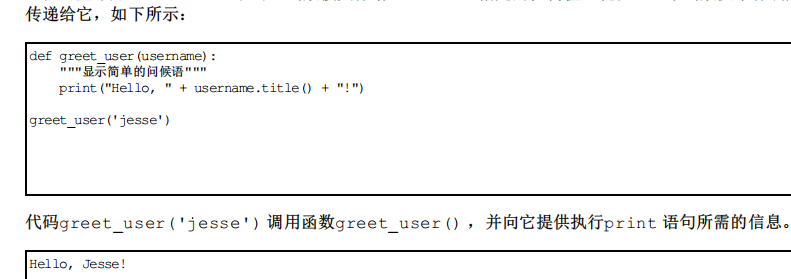

函数
定义函数：
例如：def array():
#xxxxxxxxxxx
print("hello")
array就是一个简单的函数，关键字def告诉python你要定义一个函数，后面接的是函数名，括号里面是你需要什么信息辅助完成这个函数，定义以冒号结尾
这个函数的功能很简单，就是打印一个hello
向函数传递信息：

实参和形参：
前面定义函数greet_user() 时，要求给变量username 指定一个值。调用这个函数并提供这种信息（人名）时，它将打印相应的问候语。
在函数greet_user() 的定义中，变量username 是一个形参——函数完成其工作所需的一项信息。在代greet_user('jesse') 中，值'jesse' 是一个实参。实参是调用函数时传递给函数的信息。我们调用函数时，将要让函数使用的信息放在括号内。在greet_user('jesse') 中，将实参'jesse' 传递给了函数greet_user() ，这个值被存储在形参username 中。
传递实参：
1、位置实参：
你调用函数时，Python必须将函数调用中的每个实参都关联到函数定义中的一个形参。为此，最简单的关联方式是基于实参的顺序。这种关联方式被称为位置实参。
如：

注：你可以根据需要调用函数任意次；位置实参的顺序很重要，实参的顺序应该与形参一样
2、关键字实参：
直接在实参中将名称和值关联起来，如：

3、默认值：
例如：

通过这种方式可以使得函数更加方便使用
注意：在这个函数的定义中修改了形参的排列顺序，且由于给定了一个形参默认值，无需通过实参来指定动物类型，因此调用时只需包含一个实参，如：

注意：如果你要描述的动物不是狗，可以这样:

4、等效的函数调用：
例如：

输出与之前的示例相同
5、避免实参错误：
例如：

返回值：
1、返回简单值：
例：

直接return就行了，调用返回值的函数时，需要提供一个变量用来存储返回值，上图就是存储在了full_name中。
2、让实参变成可选的：
有时，需要将实参变成可选的，这样的话函数的使用者就只需要在必要时才提供额外的信息。
可以通过使用默认值将实参变成可选。
例如：


通过这种方式就使得实参变成了可选的了
3、反回字典：
下列函数将返回一个表示人的字典：

原理上函数可以返回任何类型的值。
4、结合使用函数和while循环：
例如：

在这个示例中，我们使用的是get_formatted_name() 的简单版本，不涉及中间名。其中的while 循环让用户输入姓名：依次提示用户输入名和姓（见❶）。
但这个while 循环存在一个问题：没有定义退出条件。请用户提供一系列输入时，该在什么地方提供退出条件呢？我们要让用户能够尽可能容易地退出，因此每次提示用户输入
时，都应提供退出途径。每次提示用户输入时，都使用break 语句提供了退出循环的简单途径：

注：如何禁止函数修改列表呢，如：

传递任意数目的实参：

通过*toppings，*号使得python创建了一个叫toppings的空元组并将所有收到的值都封装到这个元组中。
结合使用位置实参和任意数量实参：

使用任意数量的关键字实参：
例如：
例如：
 函数build_profile() 的定义要求提供名和姓，同时允许用户根据需要提供任意数量的名称—值对。形参**user_info 中的两个星号让Python创建一个名为user_info 的空字典，并将收到的所有名称—值对都封装到这个字典中。在这个函数中，可以像访问其他字典那样访问user_info 中的名称—值对。
函数build_profile() 的定义要求提供名和姓，同时允许用户根据需要提供任意数量的名称—值对。形参**user_info 中的两个星号让Python创建一个名为user_info 的空字典，并将收到的所有名称—值对都封装到这个字典中。在这个函数中，可以像访问其他字典那样访问user_info 中的名称—值对。将函数存储在模块中：
1、导入整个模块：
例如：

2、导入特定函数：
例如：

3、使用as给函数指定别名：
例如：

4、使用as给模块指定别名：
例如：

5、导入模块中的所有函数：
例如：from array import *
函数编写指南：
例如：